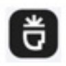

Н
НейроХудожникГенерация изображений
«НейроХудожник» представлен в разделе «Генерация изображений». При выборе проверьте нужную операцию и условия работы с результатом.
Раздел «Русские»: варианты ИИ для этой задачи, описания возможностей и переходы к обзорам. Сравните несколько решений на одинаковом примере.
Подготовьте понятное описание услуги на русском языке для своего сайта или объявления. Передайте аудиторию, состав работ и порядок обращения; получите текст с простыми формулировками, который нужно сверить с действительными условиями перед размещением на выбранной площадке.
Напиши понятное описание мастерской ремонта мебели на русском: восстановление соединений, замена фурнитуры, оценка по фотографиям. Используй простые слова, не добавляй скидки, сроки и обещание восстановить любую вещь.

«НейроХудожник» представлен в разделе «Генерация изображений». При выборе проверьте нужную операцию и условия работы с результатом.
«Поток» представлен в разделе «HR». При выборе проверьте нужную операцию и условия работы с результатом.
Сократик создаёт презентации по заданной теме, включая текст, изображения, графики и таблицы. Для оформления предусмотрены дизайн-шаблоны и онлайн-редактор. Продукт связывает получение первого варианта с возможностью его доработать, после чего результат можно перенести в PowerPoint или сохранить в PDF для просмотра и дальнейшего использования.
«AiGenda» помогает упорядочить рабочие заметки.
Aimylogic позволяет собирать чат-ботов и голосовые процессы в визуальном конструкторе. Российская платформа Just AI поддерживает распознавание естественной речи и обучение на намерениях пользователя. Доступны сценарии обзвона и IVR, а для внешних систем предусмотрены API и вебхуки.
AiSearh объединяет текстовые, графические, звуковые и видеомодели в общем веб-интерфейсе. Среди задач предусмотрены написание текста и кода, изображения, озвучка и ролики. Встроенная ИИ-среда для сайтов и приложений дополняется расширением Chrome и Telegram-ботом, связывая разные виды генерации с несколькими способами доступа к платформе.
Chad AI объединяет языковые и творческие модели в русскоязычном окне. Среди направлений представлены тексты, изображения и видео, а также музыкальная генерация. Пользователь работает с разными нейросетями через общий сервис, рассчитанный на доступ из России и оплату российскими картами.
«Corgi AI» помогает изучать выбранный язык.
«Elemento AI» представлен в разделе «Работа с документами». При выборе проверьте нужную операцию и условия работы с результатом.
«EOAI» готовит текстовый черновик по условиям задачи. «EOAI» помогает с задачами поискового продвижения.
Сравнивать «iiMed» с другими инструментами раздела «Бизнес» удобнее на одинаковом исходном материале.
«MeetScribe» преобразует речевую запись в письменный материал. Дополнительно «MeetScribe» помогает строить карту связанных идей.
«NeuroAvatarBot» готовит визуальные материалы по заданию.
Сравнивать «Oyper» с другими инструментами раздела «Мода, стиль и образы» удобнее на одинаковом исходном материале.
Сравнивать «RetailRocket» с другими инструментами раздела «Маркетинг» удобнее на одинаковом исходном материале.
Для «Smart Engines» сначала определите свою задачу и требуемый результат. Карточка относится к направлению «Анализ данных».
«Speech Analytics» преобразует речевую запись в письменный материал. «Speech Analytics» помогает перенести содержание на другой язык.
«Wikibot» связан с обработкой обращений клиентов.
ZeusGPT объединяет модели для текстовых и визуальных задач в одном веб-приложении. Также представлены музыкальные инструменты и озвучивание, дополняющие работу с изображениями и видео. Российская платформа поддерживает расчёты в рублях и предоставляет разговорный ИИ-интерфейс для обращения пользователя к доступным возможностям.
«Умка ИИ» представлен в разделе «Бизнес». При выборе проверьте нужную операцию и условия работы с результатом.

24AI ориентирован на оформление товарных изображений. Фотография продукта становится основой макета, поэтому точность внешнего вида важнее эффектности фона.
Сравнивать «Celsus» с другими инструментами раздела «Анализ данных» удобнее на одинаковом исходном материале.
«Colorize» добавляет цвет к чёрно-белому снимку.
Designs.ai распределяет общее задание между специализированными ИИ-агентами для разных видов контента. Платформа работает с изображениями и видео, презентациями и звуком. При подготовке материалы ориентируются на единый стиль бренда, связывая отдельные направления генерации в общей задаче оформления и коммуникации.
«Erudite AI» готовит текстовый черновик по условиям задачи.
Для «Eureka Engine» сначала определите свою задачу и требуемый результат. Карточка относится к направлению «Анализ данных».
«Hama» убирает выбранные объекты из визуального материала.
Сравнивать «Jivo» с другими инструментами раздела «Создание чат-ботов» удобнее на одинаковом исходном материале.
«Joineo» помогает собирать и править видеоматериал.
Сравнивать «Nlogic» с другими инструментами раздела «Автоматизация» удобнее на одинаковом исходном материале.
Для «SberMedAi» сначала определите свою задачу и требуемый результат. Карточка относится к направлению «Здоровье».
Study AI даёт доступ к разным нейросетям через общий русскоязычный кабинет. Сервис поддерживает работу с текстами и учебными материалами, подготовку презентаций и создание визуального контента. Среди направлений есть изображения и видео; условия доступа ориентированы на пользователей из России с расчётами в рублях.

Для «TalkPilot» сначала определите свою задачу и требуемый результат. Карточка относится к направлению «Чат-боты и ассистенты».
TurboText подготавливает и перерабатывает тексты на русском языке с участием ИИ. Сервис предлагает перевод, описания товаров и заголовки, а также разговорного помощника и генерацию изображений. Веб-интерфейс и Telegram-бот предоставляют разные способы обращения к инструментам подготовки и обработки материала.
«VeraVoice» получает речевую запись из текста.
Для «НейроЗвонки в Телеграм» сначала определите свою задачу и требуемый результат. Карточка относится к направлению «Проведение собеседований».
Для «3i Tech» сначала определите свою задачу и требуемый результат. Карточка относится к направлению «Аудио (голос и музыка)».

ArtGeneration.me используют для задачи: получать изображения из словесного задания. Ещё одно направление работы: собирать видео с цифровым ведущим.
Для «BrainTalk AI» сначала определите свою задачу и требуемый результат. Карточка относится к направлению «Чат-боты и ассистенты».
ChatINFO предоставляет разговорный интерфейс и средства генерации текстов прямо в браузере. Среди задач есть статьи и сочинения, рерайт и проверка написания. Помощь с кодом и творческими материалами дополняет набор инструментов российского сервиса для работы с письменным содержанием пользователя.
Для «CyberYozh App» сначала определите свою задачу и требуемый результат. Карточка относится к направлению «SEO-инструменты».
«GigaCode» помогает готовить изменения программного кода.
«Insighter» преобразует речевую запись в письменный материал.
Сравнивать «PulseGPT» с другими инструментами раздела «ИИ-ассистент» удобнее на одинаковом исходном материале.

RoomGPT предлагает варианты оформления пространства на основе фотографии и выбранного стиля. Пользователь передаёт снимок комнаты, дома или участка и получает визуальный образ изменений. После генерации стоит сравнить проёмы и геометрию с оригиналом: идея оформления требует проверки деталей, а не заменяет точный проект помещения.
Сравнивать «SellerDen» с другими инструментами раздела «Бизнес» удобнее на одинаковом исходном материале.
«Syntera» представлен в разделе «Бизнес». При выборе проверьте нужную операцию и условия работы с результатом.
Для «Visary AI» сначала определите свою задачу и требуемый результат. Карточка относится к направлению «Разработка».
Страница 4 из 5